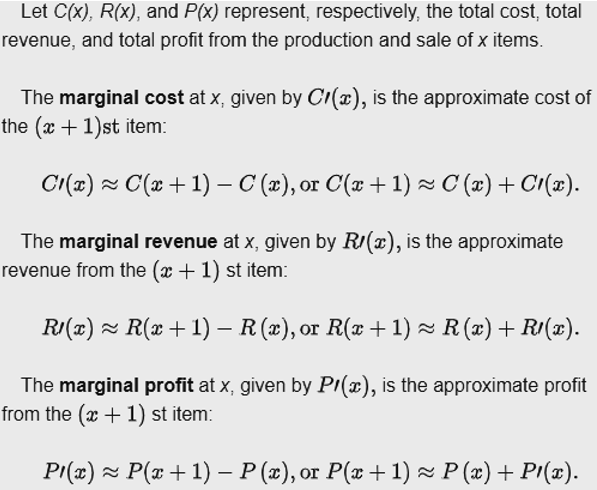

Topic 12 Marginal Analysis and Derivative of Implicit Functions
- Rules of Derivatives.
- Properties of Natural Logarithmic and Exponential Functions

12.1 More Business Applications
This section introduces more business applications using derivatives.
12.1.1 Marginal Analysis
We have briefly studied the marginal analysis cost function in an example of the application of derivatives. In this section, we introduce concept the of marginal analysis and then use examples to illustrate the applications.

The mathematical definitions are given by

Example 1: Given \(C(x) = 6x^2 + 27500\) and \(R(x) = x^3 - 12x^2 + 40x + 10\). Find each of the following.
- Total profit, \(P(x)\).
Solution: The profit is the difference between revenue and cost. That is,
\[ P(x) = R(x) - C(x) = ( x^3 - 12x^2 + 40x + 10) - (6x^2 + 27500) = x^3-18x^2 + 40x -27490. \]
- Total cost, revenue, and profit from the production and sale of 50 units of the product.
Solution: We evaluate the above three functions at \(x = 50\).
\[ \begin{array}{lclcl} C(50) & = & 6\times 50^2 + 27500 & = &42500. \\ R(50) & = & 50^3 - 12\times 50^2 + 40\times 50 + 10 & = & 97010. \\ P(50) & = & 50^3-18\times 50^2 + 40\times 50 -27490 & = & 54510. \end{array} \]
- The marginal cost, marginal revenue, and marginal profit when 50 units are produced and sold.
Solution: We first find the marginal functions of cost, revenue, and profit in the following.
\[ \begin{array}{lclcl} C^\prime(x) & = & 6(x^2)^\prime + (27500)^\prime & = & 12x. \\ R^\prime(x) & = & (x^3)^\prime - 12(x^2)^\prime + 40(x)^\prime + (10)^\prime & = & 3x^2-24x + 40.\\ P^\prime(x) & = & (x^3)^\prime -18(x^2)^\prime + 40(x)^\prime -(27490)^\prime & = &3x^2 - 36x + 40. \end{array} \] The marginal cost, revenue, and profit are given by \[ \begin{array}{lclcl} C^\prime(50) & = & 12\times 50 & = & \textit{\$}600. \\ R^\prime(50) & = & 3\times 50^2-24\times 50 + 40 & = & 6340.\\ P^\prime(50) & = &3\times 50^2 - 36\times 50 + 40 & = & 5740. \end{array} \] Therefore, The marginal cost, revenue, and profit are $600, $6340, and $5740.
Example 2: Donaldson’s Millers produces hats. Its cost \(C(x)\), in thousands of dollars, to produce \(x\) thousand hats, where \[ C(x) = 40 - 18e^{-0.08x}. \] Find the marginal cost when 10000 hats are produced, and estimate the cost of producing additional 1000 hats.
Solution: We first calculate the marginal cost function in the following. \[ C^\prime(x) = [40 - 18e^{-0.08x}]^\prime = (40)^\prime - 18(e^{-0.08x})^\prime = -18\times (-0.08)e^{-0.08x} = 1.44e^{-0.08x} \]
CAUTION : The unit of hats produced is thousand! We simply plug 10 (i.e., 10000 hats) into the cost function \(C(x)\). \[ C^\prime(10) = 1.44e^{-0.08\times 10} = 1.44e^{-0.8} \approx 0.6470337. \] That is, the marginal cost when producing 10000 hats is approximately equal to $647.03.
The total cost of producing 11000, which is 11 thousand, is approximated by
\[ C(11) \approx C(10) + C^\prime(10) = (40 - 18e^{-0.08\times 10}) + 0.6470337 \approx 32.55911. \] That is, the total cost of producing 11000 is approximately equal to $32559.11.
12.1.2 Elastic Demand
The price elasticity of demand is the percentage change in the quantity demanded of a good or service divided by the percentage change in the price.
For example, the price of a calculator increases from $20 to $25. Then the percentage of the original price is
\[ \text{percentage of change (increase) in price } = \frac{25-20}{20}\times 100\% =25\%. \]
Another example, if the demand quantity decreases from 5000 to 4500 due to the increase of price, then the
\[ \text{percentage of change (decrease) in demand quantity } = \frac{4500-5000}{5000}\times 100\% = -10\%. \]
Recall also that the rate of change of a function \(f(x)\) is given by
With the above definitions, we write the definition of the price elasticity of demand as
Example; Calculate the elasticity between points A and B in the graph below.
Solution: We calculate the two percentage of changes first.
\[ \text{percentage of change (increase) in price } = \frac{70-60}{60}\times 100\% \approx 16.7\%. \]
\[ \text{percentage of change (decrease) in demand quantity } = \frac{2800 - 3000}{3000}\times 100\% \approx -6.7\%. \] Therefore, elasticity between points A and B is
\[ \text{price elasticity of demand} = -\frac{-6.7\%}{16.7\%} = 40.1\% \]
12.1.2.1 Formal Definition of Elastic Demand
To derive the elastic demand function, we assume the demand function of price to have the form, \[ q = D(x) \] Clearly, \(D(x)\) is decreasing in x since as the price increases, the demand decreases.
For any change, \(\Delta x\), in the price per unit, the percent change (expressed as a decimal) in price is \(\Delta x/x\). A price change produces a change, \(\Delta q\), in the quantity demanded, and the percent change in this quantity is \(\Delta q/q\).
The ratio of the percent change in quantity sold to the percent change in price is \[ \frac{\Delta q/q}{\Delta x/x} = \frac{x}{q}\frac{\Delta q}{\Delta x}. \] The elastic demand is defined to be
\[ E(x) = -\lim_{\Delta \to 0} \frac{x}{D(x)}\frac{\Delta D(x)}{\Delta x} = -\frac{x}{D(x)}\lim_{\Delta \to 0}\frac{\Delta D(x)}{\Delta x} =- \frac{xD^\prime(x)}{D(x)}. \]
Since \(D(x)\) is decreasing, \(D^\prime(x) < 0\). Therefore, \(E(x) > 0\).
12.1.2.2 Revenue and Elastic Demand
A demand function, \(q = D(x)\), relates the quantity q of units purchased to the price x, in dollars per unit. This means that the total revenue generated from selling or manufacturing \(D(x)\) items with unit price \(x\) is \[ R(x) = xD(x). \]
Retailers and manufacturers often need to know how a small increase in price will affect demand and total revenue. Next, we look at the connection between the marginal total revenue and the elastic demand. Note that the marginal revenue is defined to be
\[ R^\prime(x) = [xD(x)]^\prime = (x)^\prime D(x) + x D^\prime(x) = D(x) + xD^\prime(x) = D(x)\left[1 + \frac{xD^\prime(x)}{D(x)}\right] = D(x)[1-E(x)]. \]
We can see from the above relationship that
Case 1: When \(E(x) < 1\) implying \(R^\prime(x) > 0\), we say that the demand is inelastic. A small rise in price will increase total revenue.
Case 2: When \(E(x) > 1\) implying \(R^\prime(x) < 0\), we say that the demand is elastic. A small rise in price will result in a decrease in total revenue.
Case 3: When \(E(x) = 1\) implying \(R^\prime(x) = 0\), the total revenue is maximized. This case is called unit elasticity.
Example 3: The demand for video game rentals at Klix Video Games is given by
\[ q = D(x) = 120 - 20x, \]
where q is the number of video games rented per day at \(x\) dollars per rental.
- Find the elasticity of demand as a function of \(x\).
Solution: By definition, \[ E(x) = -\frac{xD^\prime(x)}{D(x)} = -\frac{x(120-20x)^\prime}{120-20x} = \frac{20x}{120-20x} = \frac{x}{6-x}. \]
- Find the elasticity at \(x = 2\) and at \(x = 5\). Interpret the meaning of these values of elasticity.
Solution: \(E(2) = \frac{2}{6-2} = 1/2 < 1\). The elasticity is 0.5. A small percentage increase in price will cause an even smaller percentage decrease in the quantity demanded.
\(E(5) = \frac{5}{6- 5} = 5 > 1\). A small percentage increase in price will cause a larger percentage decrease in the quantity demanded.
- Find the value of x for which \(E(x) = 1\). What is the significance of this price?
Solution: Note that \(E(x) = 1\) is equivalent to \[ \frac{x}{6 - x} = 1 ~~\Rightarrow~~ \frac{x}{6-x}-1 = 0~~\Rightarrow~~ \frac{x}{6-x}-\frac{6-x}{6-x} = 0 \] \[ \Rightarrow~~ \frac{2x-6}{6-x} = 0~~\Rightarrow~~ 2x - 6 = 0 ~~\Rightarrow~~ x = 3. \]
A small percentage increase in price will cause a larger percentage decrease in the quantity demanded. The demand is \(q = 120 - 20\times 3 = 60\) which generates total revenue \(R(x) = 3\times 60 = 180\) dollars per day.
12.2 Implicit Differentiation
In implicit differentiation, we differentiate each side of an equation with two variables (usually \(x\) and \(y\)) by treating one of the variables as a function of the other. This calls for using the chain rule.
12.2.1 Some Illustrative Examples
For example, if we treat \(y\) to be a function of \(x\), then the chain rule is used in the following ways:
\[ (y^2)^\prime = 2y^{2-1}y^\prime = 2y\times y^\prime, \] \[ (e^y)^\prime = e^y\times y^\prime, \]
\[ [\log_a y]^\prime = \frac{y^\prime}{y\ln a} \]
Example 4: Find the derivative of \(y\) in terms of \(x\) based on \(x^2 + y^2 = 1\).
Solution: We treat y to be a function of \(x\). Taking the derivative on both sides of the equation, we have
\[ [x^2 + y^2]^\prime = (1)^\prime~~\Rightarrow~~ (x^2)^\prime + (y^2)^\prime =0 \]
\[ 2x + 2yy^\prime = 0~~\Rightarrow y^\prime = -\frac{x}{y}. \]
Notice that the derivative of \(y^2\) is \(2yy^\prime\) and not simply \(2y\)!
Example 5: Find \(y^\prime\) from \(x^2 + xy + y^3 = 0\). Which of the following is correct?
(A). \(-\frac{2x}{1+3y^2}\).
(B). \(-\frac{x+3y^2}{2x+y}\).
(C). \(-\frac{2x+y}{x+3y^2}\).
(D). \(-\frac{2x}{x+3y^2}\).
Answer: C.
Explanation: \((x^2 + xy + y^3)^\prime = 0\) gives \((x^2)^\prime + (xy)^\prime + (y^3)^\prime = 0\). Therefore, \(2x + (x)^\prime y + x(y)^\prime + 3y^2 y^\prime = 0\), that is, \(2x+y+xy^\prime + 3y^2y^\prime = 0\). Hence \(y^\prime = -(2x+y)/(x+3y^2)\).
12.2.2 Differentiating Implicit Function As Simplification
The method of differentiating implicit functions can be used to simplify the calculation in finding the derivative of explicit functions. We next use examples to illustrate the idea.
Example 6: Find the derivative of \(y\) from \(y = x^2(x^3+2)^3\).
Solution: We first take the natural logarithmic function on both sides of the equation
\[ \ln (y) = \ln[x^2(x^3+2)^3] = \ln x^2 + \ln (x^3 + 2)^3 = 2\ln x + 3\ln (x^3 + 2) \]
Taking the derivative of both sides of the above equation, we have
\[ \frac{y^\prime}{y} = \frac{2}{x} + 3\frac{(x^3+2)^\prime}{x^3+2} = \frac{2}{x} + 3\frac{3x^2}{x^3+2} = \frac{2}{x} + \frac{9x^2}{x^3+2}. \] Therefore,
\[ y^\prime = y\left( \frac{2}{x} + \frac{9x^2}{x^3+2}\right) = x^2(x^3+2)^3 \left( \frac{2}{x} + \frac{9x^2}{x^3+2}\right) \]
\[ = \frac{2x^2(x^3+2)^3}{x} + \frac{9x^2\times x^2(x^3+2)^3}{x^3+2}= 2x(x^3+2)^3 + 9x^4(x^3+2)^2. \]
Example 7: Find he absolute minimum of \(y = (2x)^x\) over interval \((0, \infty)\).
Solution: As usual, we need to find \(y^\prime\) and \(y^{\prime\prime}\). Because both base and exponent have variable x. We don’t have a rule derivative that gives the derivative directly. We take natural-base logarithm and obtain \(\ln y = \ln (2x)^x = x\ln(2x)\).
\[ [\ln y]^\prime = [x\ln(2x)]^\prime = (x)^\prime \ln(2x) + x(\ln 2x)^\prime = \ln(2x) + x\frac{(2x)^\prime}{2x} = \ln(2x) + 1 \] That is, \[ y^\prime / y=\ln(2x) + 1~~\Rightarrow~~ y^\prime = y[\ln(2x)+1] = (2x)^x[\ln(2x) + 1]. \]